Artemis Fowl
Nowwhat the site shows today
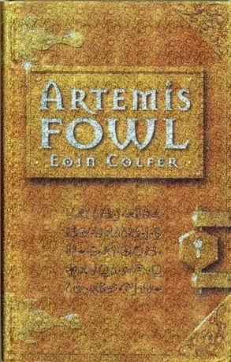
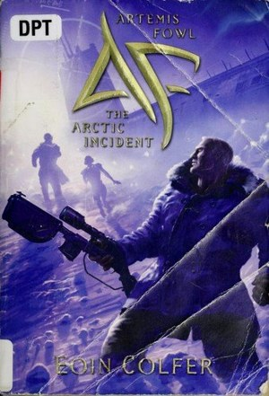
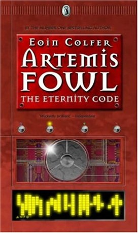
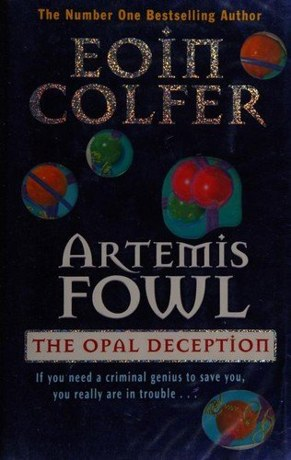
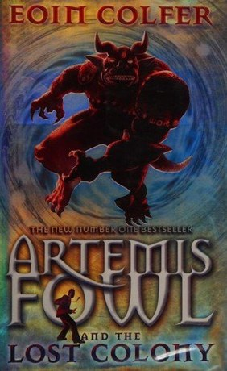
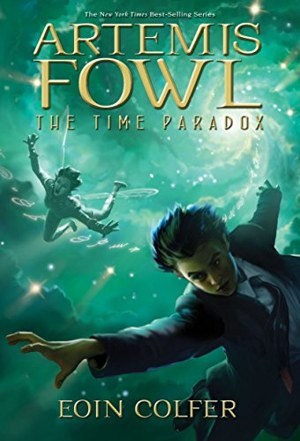
AOriginal Puffin (metal plates)
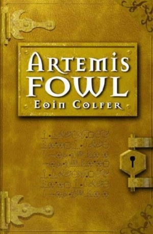
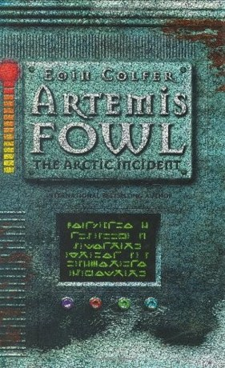
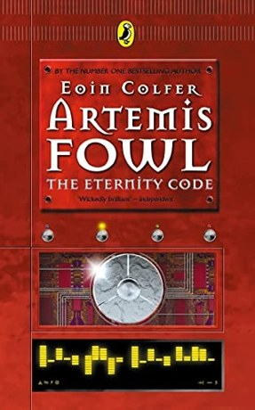
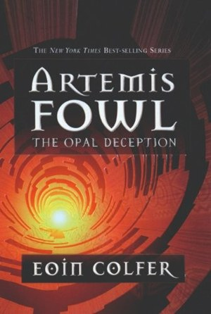
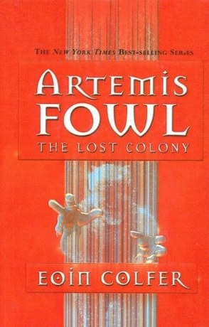
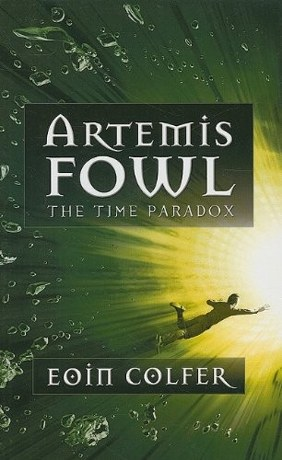
BPuffin “Criminally Good” (2019)
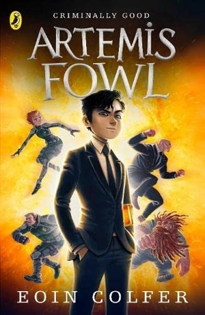
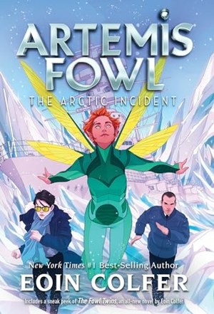
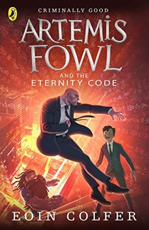
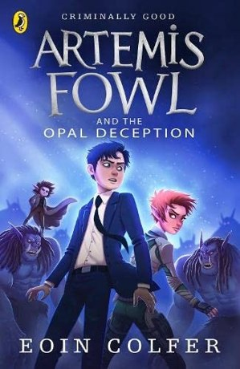
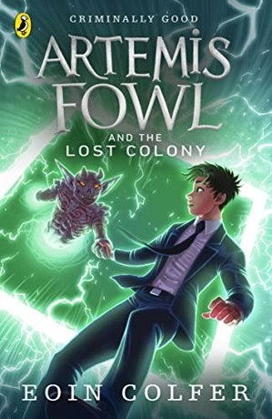
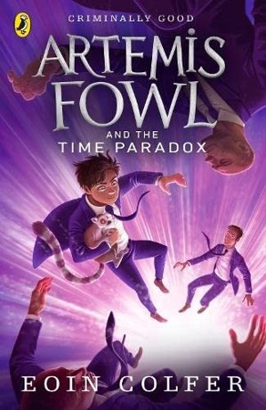
The Old Kingdom
Nowwhat the site shows today
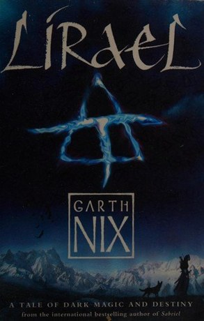
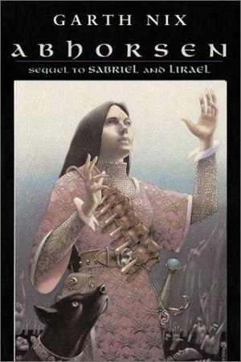
APainted (Leo and Diane Dillon)
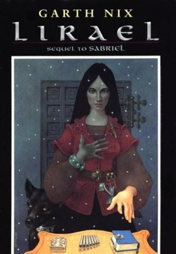
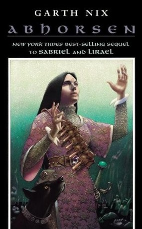
BBlack with glowing charter mark
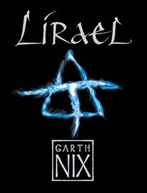
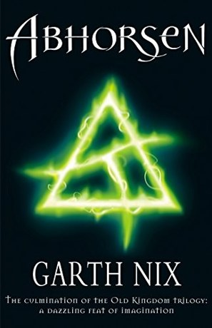
CColour with charter mark
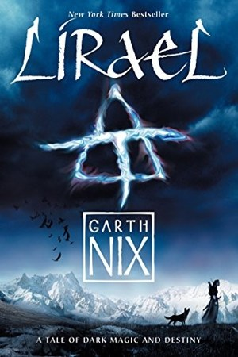
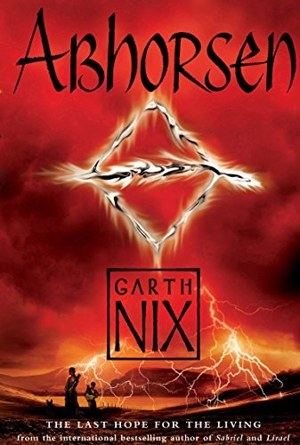
Castaways of the Flying Dutchman
Nowwhat the site shows today
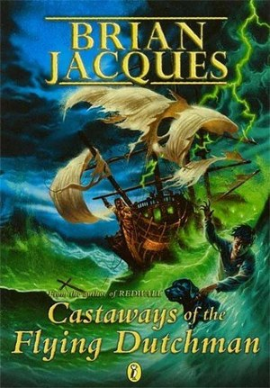
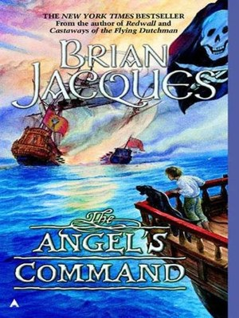
APainted, white title
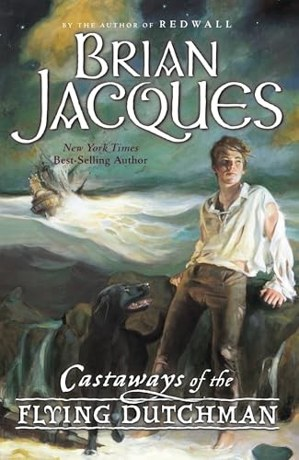
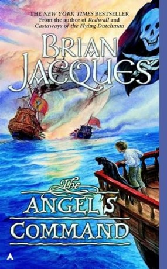
BPuffin (blue-green seas)
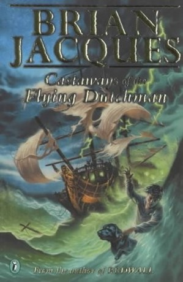
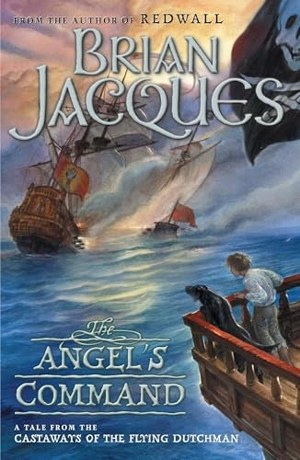
Miss Marple
Nowwhat the site shows today
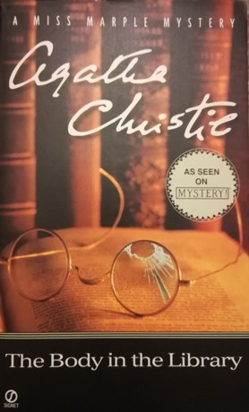
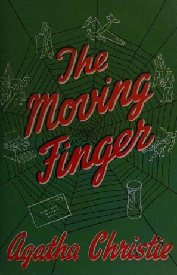
A“Marple” object covers
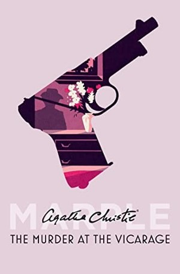
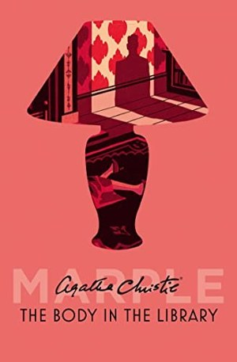
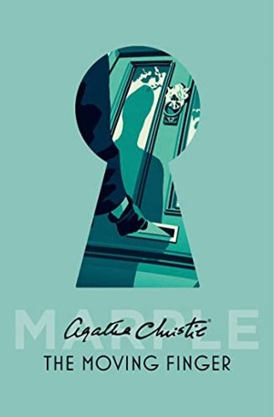
B“The Queen of Mystery” red signature
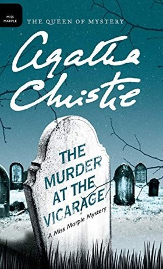
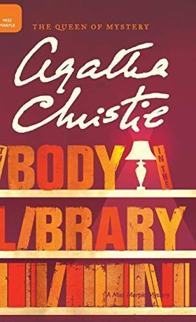
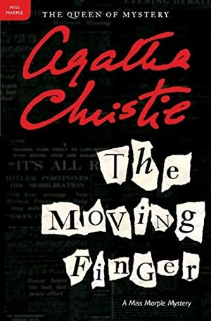
The Edge Chronicles
Nowwhat the site shows today
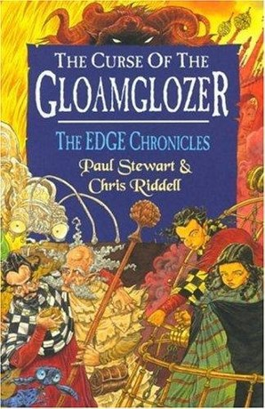
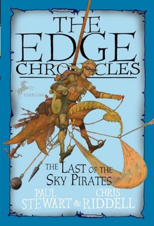
AOriginal Corgi (bright cartoon)
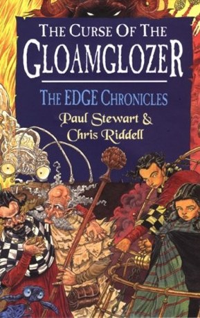
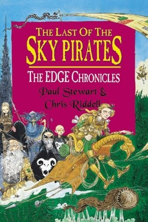
BDark painted, big title (2011)
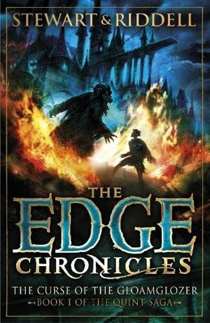
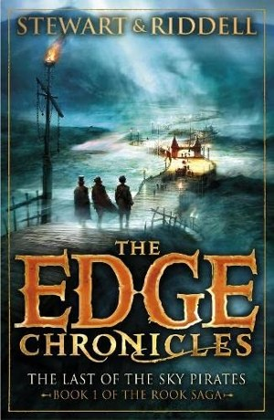
COld leather-book look
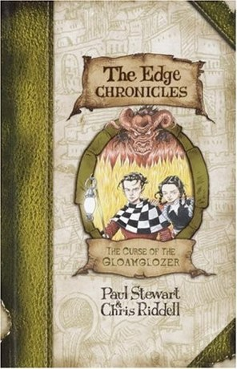
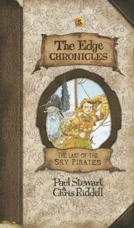
The Science of Discworld
Nowwhat the site shows today
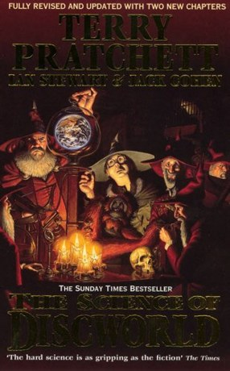
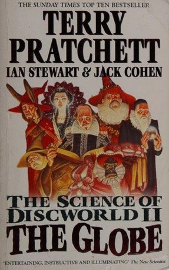
AOriginal Ebury (dark paintings)
B2014 reissue (bright colours)
Little Blue Envelopes
Nowwhat the site shows today
AGirl with the envelope
BBlue lettering
Malory Towers
Nowwhat the site shows today
ACartoon girls (Egmont) for all twelve
BKeep as now (painted 1 to 6, cartoon 7 to 12: no painted versions of 7 to 12 exist)
Discworld (sample of six: Sourcery, Night Watch, Monstrous Regiment, Going Postal, Thud!, Making Money)
Nowwhat the site shows today
ACorgi paperbacks, Kirby and Kidby paintings (most of yours already)
BBlack Corgi editions (one small object)
CPenguin 2022 (bold colour)